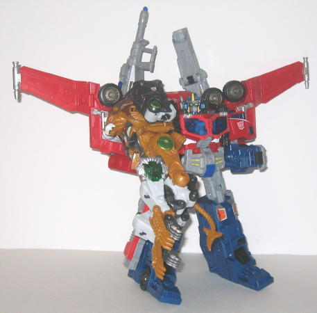

Beast mode is a lion.
This mode is pretty nice-looking, with GREAT mold detailing. The wiry mane
and metallic-looking muscular tendons really give Leobreaker a very techno-organic
feeling, even moreso than many of the
Beast
Machines
toys! The paint detailing is a tad sparse on the legs, but
otherwise the places where it is used look pretty good-- the steel "backbone"
detailing between the back legs and the various metallic green parts look
especially cool. The green-painted part on the forehead looks almost like
a jewel, which is a nice detail. Speaking of which, if you press in on
the jewel-piece, Leobreaker's mouth opens a little and a roaring sound
is heard-- however, the roar sounds more like a cheetah or some lesser
cat, it's not deep enough to be a lion's. Leobreaker does have a few minor
extras in this mode-- the robot heels on the back of the legs are a little
too obvious, and the the lower robot chest is below the lion head, and
it looks a little odd just hanging below the chin like that. I'm also not
too fond of the proportions of the back legs, they aren't bulky enough
and look a bit too stiff when compared to the front legs. The pegs that
hold together the mid-section of Leobreaker also come apart a little too
easily as well, which is a little annoying. An additional minor downside
is that Leobreaker's tail doesn't have any articulation. As for Leobreaker's
Cyber Key gimmick, if you plug the Cyber Key into either of his front legs,
fierce-looking claws fold out. They look pretty cool, but it is a little
dissapointing when you consider that Overhaul, who upgraded into Leobreaker,
always had the same claws out without needing a Cyber Key. But still, it's
a pretty decent gimmick.
There are two big problems
I have with Leobreaker's robot mode. First, the transformation is only
a slight modification of the way-overdone "stand me up and change my head"
beast transformation, so his two modes look too similar to me, not to mention
I think he's too simplistic for a $20 toy. His proportions are also rather
out-of-whack-- his arms and waist piece are too long while his legs are
too short. The legs proportions in and of themselves are also rather wonky,
with the upper legs being wider than the lower legs-- yes, I know this
is the case on humans, but it doesn't look right on a Transformer. There's
also an unsightly gap in between the upper and lower legs, above the knee
joint, and there's flaps hanging off the waist-- such kibble that doesn't
accentuate the robot mode is rare on a Cybertron transformer. There are
a few stylistic choices that I like, however-- the "ponytail" on the robot
head made from part of the lion mane adds a bit of character, and the actual
head itself is definitely reminscent of
Overhaul
,
but more cat-like. The front lion paws make convincing hands, which is
rare for such a transformation. Leobreaker's weapon-of-choice is the standard
tail-whip-- remember kids, when in doubt, just unplug the tail from the
body and use it as the robot mode weapon! Leobreaker's articulation, while
not horrible, is sub-par for a Cybertron toy, and what's odd is that his
upper arms actually fold out IN THE MIDDLE to provide the lower arms clearance
from the hips. It looks really odd with his arms moving outwards at such
an odd position. Besides this, Leobreaker also has shoulder, elbow (in
two places), thumb, finger (as a whole set of four on each hand), hip,
and knee articulation. His head can move ever-so-slightly from side-to-side,
but not much. Many of his articulation points can only move in one direction,
so this ends up making Leobreaker look a little unnaturally stiff.

Leobreaker also has
the added feature of being able to form a big ol' beefy arm for
Optimus
Prime
(or
Megatron
, but why'd he want
to combine with him? That job's for the eeevil repaint,
Nemesis
Breaker
). What's worth mentioning is that the lower arms actually detach
and recombine duirng the transformation to arm mode-- it takes a LOT of
force to get the arms off, though, it almost feels like they're about to
crack apart with the amount of force you have to apply. Even though he
fits in pretty well in Optimus' arm-socket and is pretty study, Leobreaker
makes a rather questionable arm-- there's no real hand to the arm, just
his claws positioned next to each other to form a sort of "hand without
thumbs", or whatnot. And the legs don't peg together to make the arm look
more solid, which is another downside. You can put the tail back in its
beast mode socket to form a sort of odd-looking thumb, but it still doesn't
look quite right.
Leobreaker is a bit
of a dissapointment for being one of the only big beast-bots in the line--
his transformation is uninspired and too simplistic, his robot mode has
odd proportions, and his arm mode is pretty iffy. His beast mode is good,
and he has very nice mold detailing, but that isn't nearly enough to put
this figure in the "must-buy" category. You're better off getting the many
better Cybertron toys, unless you either are really desperate for more
animal TFs, are a completist, or just really like combining figures, regardless
of whether the combination is good or not.
Review by Beastbot